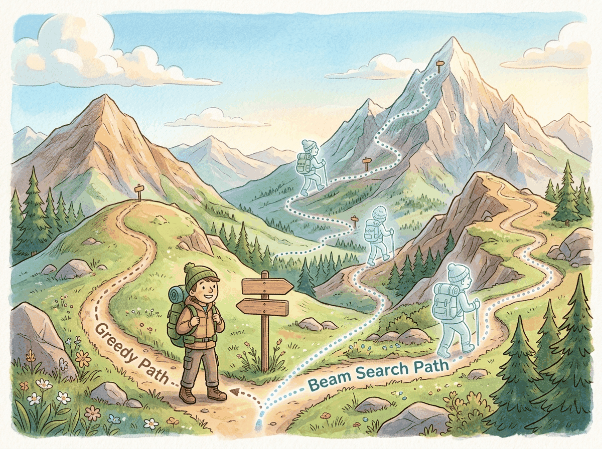

Greedy decoding always picks the most probable next token. I do the same with snacks, and the results are equally predictable.
Greedy AI Agent
Prerequisites
This section assumes you understand how a Transformer produces a probability distribution over tokens at each position, as covered in Section 4.1. Familiarity with softmax, logits, and conditional probability from Section 0.1 is expected. The temperature parameter introduced here is revisited as an API parameter in Section 9.2.
Why does decoding matter? A language model assigns probabilities to every possible next token. But probabilities are not text. To actually produce a sentence, you need a decoding algorithm that walks through the probability landscape and selects tokens one by one. The simplest approach, greedy decoding, just picks the highest-probability token at each step. It is fast, but it often misses better sequences that require a locally suboptimal choice early on. Beam search addresses this by exploring multiple candidates in parallel. Building on the Transformer forward pass from Section 4.1, understanding these deterministic strategies is essential because they form the foundation for every more sophisticated method we will encounter later in this chapter.

1. The Decoding Problem
In Chapter 04, you built a Transformer that outputs logits at each position. Now we learn what to do with those logits. After a language model completes its forward pass, the final layer produces a vector of logits, one value per token in the vocabulary. Applying softmax converts these logits into a probability distribution over the vocabulary. The decoding algorithm then decides which token to emit and append to the context for the next step.
Formally, given a prompt $x_{1}, ..., x_{t}$, the model computes:
The question is: how do we select $x_{t+1}$ from this distribution? And then $x_{t+2}$, $x_{t+3}$, and so on until we reach an end-of-sequence token or a maximum length? This is the decoding problem, and there is no single correct answer. Different applications call for different strategies.
Deterministic decoding means the same input always produces the same output (no randomness). Stochastic decoding (Section 5.2) introduces randomness by sampling from the distribution. Deterministic methods are preferred when you need reproducibility, such as in machine translation, summarization, or structured data extraction. The choice of decoding strategy also becomes a practical consideration when configuring LLM API calls (Chapter 9).
2. Greedy Decoding
The Greedy Decoding Algorithm
Greedy decoding is the simplest possible strategy: at each time step, select the token with the highest probability. No lookahead, no alternatives, no backtracking.
This is computationally cheap (one forward pass per token, one argmax per step) and easy to implement. For many straightforward tasks, it works surprisingly well. But it has a fundamental flaw: it is locally optimal, not globally optimal. The highest-probability token at step t might lead to a lower-probability sequence overall compared to a slightly less probable choice at step t that opens up a much better continuation.
Who: A machine learning engineer at a health informatics startup building an automated clinical note summarizer.
Situation: The system needed to condense lengthy patient encounter notes into structured summaries for physician review.
Problem: Early prototypes used greedy decoding, which produced grammatically correct but repetitive summaries that sometimes looped on phrases like "the patient reported the patient reported."
Dilemma: Switching to stochastic sampling risked introducing hallucinated medical details (dangerous in healthcare), while greedy decoding kept producing loops. Beam search offered a middle ground, but the team worried about latency on their GPU budget.
Decision: They adopted beam search with beam width 4 and a length penalty of 0.8, combined with n-gram repetition blocking (no repeated 3-grams).
How: The team benchmarked greedy, beam search (widths 2, 4, 8), and nucleus sampling (p=0.9) on a validation set of 500 clinical notes, measuring ROUGE scores, factual accuracy (physician review), and wall-clock latency.
Result: Beam search with width 4 achieved 12% higher ROUGE-L than greedy decoding, eliminated repetition loops entirely, and added only 35% latency overhead compared to greedy. Nucleus sampling scored slightly higher on ROUGE-L but introduced factual errors in 8% of summaries.
Lesson: For factual, high-stakes applications, deterministic decoding with repetition penalties often outperforms stochastic methods because consistency and correctness matter more than diversity. Code Fragment 5.1.1 below puts this into practice.
Greedy Decoding Implementation
# implement greedy_decode
# Key operations: training loop, results display
import torch
import torch.nn.functional as F
def greedy_decode(model, input_ids, max_new_tokens=50, eos_token_id=None):
"""Generate tokens using greedy decoding."""
generated = input_ids.clone()
for _ in range(max_new_tokens):
# Forward pass: get logits for next token
with torch.no_grad():
outputs = model(generated)
next_token_logits = outputs.logits[:, -1, :] # (batch, vocab)
# Greedy: pick the token with highest probability
next_token = torch.argmax(next_token_logits, dim=-1, keepdim=True)
# Append to sequence
generated = torch.cat([generated, next_token], dim=-1)
# Stop if we hit EOS
if eos_token_id is not None and next_token.item() == eos_token_id:
break
return generated
# Example usage with GPT-2
from transformers import GPT2LMHeadModel, GPT2Tokenizer
tokenizer = GPT2Tokenizer.from_pretrained("gpt2")
model = GPT2LMHeadModel.from_pretrained("gpt2")
model.eval()
prompt = "The future of artificial intelligence"
input_ids = tokenizer.encode(prompt, return_tensors="pt")
output = greedy_decode(model, input_ids, max_new_tokens=30)
print(tokenizer.decode(output[0]))Notice how the output is coherent but somewhat generic and repetitive. The phrase "the ability to create machines that can" appears twice. This is a well-known problem with greedy decoding: because it always picks the most likely token, it tends to fall into repetitive loops and produces bland, "safe" text.
Greedy decoding often produces degenerate repetition, particularly for open-ended generation. The model finds a high-probability pattern and gets stuck in a loop. This is less of an issue for constrained tasks (translation, summarization) where the output space is narrower.
3. Beam Search
Beam search was the decoding method of choice for machine translation for decades. Despite being a controlled, deterministic search algorithm, it still occasionally produces bizarre outputs like translating an entire paragraph of gibberish into "Thank you for your cooperation." The model was not being polite; it was just confidently wrong.
The Intuition
Beam search addresses the myopia of greedy decoding by maintaining multiple candidate sequences (called beams) at each time step. Instead of committing to a single best token, it keeps the top k best partial sequences and expands all of them in parallel. The parameter k is called the beam width.
At each step, beam search expands every beam by considering all vocabulary tokens, scores the resulting candidates by their cumulative log-probability, and keeps only the top k. This allows it to discover sequences where an early suboptimal choice leads to a much better overall result. (We use log-probabilities rather than raw probabilities to avoid numerical underflow: multiplying many small probabilities together quickly rounds to zero in floating point, but summing their logarithms stays numerically stable.) Code Fragment 5.1.2 below puts this into practice.
Beam Search Step by Step
- Initialize: Start with a single beam containing the prompt. Its score is 0 (log-probability).
- Expand: For each active beam, compute the probability distribution over the next token. This gives k × V candidates (where V is vocabulary size).
- Score: Each candidate's score is the parent beam's cumulative log-probability plus the log-probability of the new token.
- Prune: Keep only the top k candidates across all expansions.
- Terminate: If a beam produces an EOS token, move it to a "completed" list. Continue until all beams are complete or a maximum length is reached.
- Select: Return the completed beam with the highest score (optionally with length normalization).
Input: model M, prompt tokens x, beam width k, max length T
Output: highest-scoring complete sequence
beams = [(x, 0.0)] // each beam: (sequence, cumulative log-prob)
completed = []
for step = 1 to T:
candidates = []
for (seq, score) in beams:
if seq ends with EOS:
completed.append((seq, score))
continue
logits = M.forward(seq)
log_probs = log_softmax(logits[-1])
for each token v in vocabulary:
candidates.append((seq + [v], score + log_probs[v]))
// Keep only the top k candidates
beams = top_k(candidates, k, by=score)
if all beams are completed:
break
return argmax(completed, by=score / lengthα)
# implement beam_search
# Key operations: softmax normalization, results display
import torch
import torch.nn.functional as F
def beam_search(model, input_ids, beam_width=4, max_new_tokens=50,
eos_token_id=None, length_penalty=1.0):
"""Beam search decoding with length normalization."""
vocab_size = model.config.vocab_size
device = input_ids.device
# Each beam: (sequence_tensor, cumulative_log_prob)
beams = [(input_ids[0], 0.0)]
completed = []
for step in range(max_new_tokens):
all_candidates = []
for seq, score in beams:
if eos_token_id and seq[-1].item() == eos_token_id:
completed.append((seq, score))
continue
# Get next token probabilities
with torch.no_grad():
outputs = model(seq.unsqueeze(0))
log_probs = F.log_softmax(outputs.logits[0, -1, :], dim=-1)
# Get top-k tokens for this beam
top_log_probs, top_indices = log_probs.topk(beam_width)
for i in range(beam_width):
new_seq = torch.cat([seq, top_indices[i].unsqueeze(0)])
new_score = score + top_log_probs[i].item()
all_candidates.append((new_seq, new_score))
if not all_candidates:
break
# Keep top beam_width candidates (with length normalization)
all_candidates.sort(
key=lambda x: x[1] / (len(x[0]) ** length_penalty),
reverse=True
)
beams = all_candidates[:beam_width]
# Return best completed beam, or best active beam
all_final = completed + beams
best = max(all_final,
key=lambda x: x[1] / (len(x[0]) ** length_penalty))
return best[0].unsqueeze(0)
# Compare greedy vs. beam search
prompt = "The future of artificial intelligence"
input_ids = tokenizer.encode(prompt, return_tensors="pt")
greedy_out = greedy_decode(model, input_ids, max_new_tokens=20)
beam_out = beam_search(model, input_ids, beam_width=5, max_new_tokens=20)
print("Greedy:", tokenizer.decode(greedy_out[0]))
print("Beam-5:", tokenizer.decode(beam_out[0]))The greedy and beam search implementations above are built from scratch for pedagogical clarity. In production, use HuggingFace Transformers (install: pip install transformers), which provides all decoding strategies through a single generate() method:
# Production equivalent using model.generate()
from transformers import AutoModelForCausalLM, AutoTokenizer
model = AutoModelForCausalLM.from_pretrained("gpt2")
tokenizer = AutoTokenizer.from_pretrained("gpt2")
inputs = tokenizer("The future of AI", return_tensors="pt")
# Greedy: num_beams=1 (default); Beam search: num_beams=5
output = model.generate(**inputs, max_new_tokens=50, num_beams=5, length_penalty=1.0)
Beam search does not guarantee finding the globally optimal sequence. It is a heuristic: with beam width k, it explores k hypotheses, not the full exponential space of all possible sequences. Increasing k improves coverage but increases computation linearly. In practice, beam widths of 4 to 10 cover most use cases. Very large beam widths often degrade output quality for open-ended generation (a phenomenon sometimes called the beam search curse).
4. Length Normalization and Length Penalty
Raw beam search has a systematic bias: it prefers shorter sequences. Why? Because each additional token multiplies a probability less than 1 (or adds a negative log-probability), so longer sequences always have lower cumulative scores. This means beam search will gravitate toward short, generic completions.
Length Normalization
The standard fix is to normalize the score by the sequence length. Instead of ranking beams by their raw log-probability, we divide by length raised to a power α:
The parameter α (alpha) controls the strength of normalization:
- α = 0: No normalization (raw log-prob; favors short sequences)
- α = 1: Full normalization (average log-prob per token; neutral to length)
- α > 1: Encourages longer sequences
- α between 0 and 1: A compromise (commonly 0.6 to 0.8 in practice)
Log-probabilities are negative (since probabilities are less than 1). Summing more negative terms produces a more negative total. Without normalization, a 5-token sequence will almost always score higher (less negative) than a 20-token sequence, even if the 20-token sequence is more informative. Length normalization divides the total log-probability by sequence length, correcting this bias toward shorter outputs.
# Demonstrating the effect of length normalization
import numpy as np
# Two hypothetical beam candidates
short_seq_logprob = -8.5 # 5 tokens
long_seq_logprob = -15.2 # 12 tokens
for alpha in [0.0, 0.5, 0.7, 1.0]:
short_score = short_seq_logprob / (5 ** alpha)
long_score = long_seq_logprob / (12 ** alpha)
winner = "Short" if short_score > long_score else "Long"
print(f"alpha={alpha:.1f}: short={short_score:.3f}, long={long_score:.3f} => {winner} wins")In this example, the longer sequence becomes the winner once α exceeds roughly 0.65. The Google Neural Machine Translation paper (Wu et al., 2016) found that α = 0.6 to 0.8 works well for translation tasks.
5. Constrained Beam Search
Standard beam search explores freely across the entire vocabulary. But many real-world applications require the output to include specific tokens or phrases. For example:
- Machine translation: Ensuring that a named entity ("United Nations") appears in the translation
- Summarization: Forcing inclusion of key terms from the source document
- Data-to-text: Guaranteeing that all data fields are mentioned in the generated description
Constrained beam search modifies the standard algorithm so that beams are only considered "complete" if they satisfy a set of lexical constraints. The technique, introduced by Anderson et al. (2017) and refined by Post and Vilar (2018), organizes beams into groups based on how many constraints they have fulfilled. At each step, some beams are allowed to advance toward fulfilling a constraint (by being nudged toward the required tokens), while others continue generating freely. Code Fragment 5.1.4 below puts this into practice.
# Using HuggingFace's built-in constrained beam search
from transformers import GPT2LMHeadModel, GPT2Tokenizer
from transformers import PhrasalConstraint
tokenizer = GPT2Tokenizer.from_pretrained("gpt2")
model = GPT2LMHeadModel.from_pretrained("gpt2")
prompt = "The research team announced"
# Convert text to a list of token IDs
input_ids = tokenizer.encode(prompt, return_tensors="pt")
# Force the output to include "breakthrough" and "neural network"
constraints = [
PhrasalConstraint(tokenizer.encode("breakthrough", add_special_tokens=False)),
PhrasalConstraint(tokenizer.encode("neural network", add_special_tokens=False)),
]
# Run autoregressive generation from the input prompt
output = model.generate(
input_ids,
constraints=constraints,
num_beams=10,
max_new_tokens=30,
no_repeat_ngram_size=2,
)
# Convert token IDs back to human-readable text
print(tokenizer.decode(output[0], skip_special_tokens=True))Constrained beam search is especially powerful for controlled generation pipelines where the output must satisfy verifiable requirements. The computational cost is higher than standard beam search because the algorithm must track constraint satisfaction state for each beam, but the guarantee of constraint fulfillment often justifies the overhead.
6. When to Use Deterministic Decoding
| Method | Best For | Weaknesses | Typical Settings |
|---|---|---|---|
| Greedy | Quick prototyping, classification-like tasks, short completions | Repetitive, misses better sequences | N/A (no hyperparameters) |
| Beam Search | Translation, summarization, structured output | Bland output, short-sequence bias without length penalty | k=4 to 8, α=0.6 to 0.8 |
| Constrained Beam | Controlled generation, data-to-text, forced terminology | Higher compute, constraint specification can be complex | k=8 to 15, constraints as needed |
For open-ended generation (chatbots, creative writing, brainstorming), deterministic decoding is usually a poor choice. The repetitive, generic outputs it produces feel lifeless to users. Section 5.2 introduces stochastic sampling, which injects controlled randomness to produce more diverse, human-like text. Deterministic methods shine when there is a single "correct" output (or a narrow set of correct outputs), as in translation and factual summarization.
Decoding from a language model is fundamentally a search problem over an exponentially large combinatorial space. With a vocabulary of 50,000 tokens, generating a 100-token sequence means choosing among 50,000100 possible outputs, a number that dwarfs the estimated atoms in the observable universe. This connects to a deep result in theoretical computer science: finding the globally optimal sequence under an autoregressive model is NP-hard in the general case. Greedy decoding and beam search are heuristics that trade optimality for tractability, the same pragmatic compromise made in operations research (traveling salesman), protein folding, and game-playing AI. The surprising observation that the "beam search curse" produces worse text at larger beam widths reveals something about language itself: the most probable sequence under a model's distribution is not necessarily the most natural or informative one. Human language occupies a sweet spot between predictability and surprise, a principle formalized by information theory as the "typical set," which is also the intuition behind typical sampling in Section 5.2.
7. Lab: Greedy vs. Beam Search on Summarization
In this lab, we compare greedy decoding and beam search on a summarization task using a pretrained model. The goal is to observe how beam search produces more fluent and complete summaries. Code Fragment 5.1.5 below puts this into practice.
# Implementation example
# Key operations: training loop, results display
from transformers import AutoTokenizer, AutoModelForSeq2SeqLM
# Load a small summarization model
model_name = "facebook/bart-large-cnn"
tokenizer = AutoTokenizer.from_pretrained(model_name)
model = AutoModelForSeq2SeqLM.from_pretrained(model_name)
article = """
Scientists at MIT have developed a new method for training neural networks
that reduces energy consumption by up to 70 percent. The technique, called
sparse adaptive training, selectively updates only the most important
parameters during each training step. Initial experiments on language models
show that the approach maintains accuracy while dramatically cutting
computational costs. The team plans to release their code as open source.
"""
inputs = tokenizer(article.strip(), return_tensors="pt", max_length=512, truncation=True)
# Greedy decoding
greedy_ids = model.generate(**inputs, max_new_tokens=60, num_beams=1)
print("=== Greedy ===")
print(tokenizer.decode(greedy_ids[0], skip_special_tokens=True))
# Beam search (k=5, length_penalty=1.0)
beam_ids = model.generate(**inputs, max_new_tokens=60, num_beams=5, length_penalty=1.0)
print("\n=== Beam Search (k=5) ===")
print(tokenizer.decode(beam_ids[0], skip_special_tokens=True))
# Beam search with stronger length penalty
beam_ids_lp = model.generate(**inputs, max_new_tokens=60, num_beams=5, length_penalty=2.0)
print("\n=== Beam Search (k=5, length_penalty=2.0) ===")
print(tokenizer.decode(beam_ids_lp[0], skip_special_tokens=True))Observe how beam search with length penalty 2.0 produces the most complete summary, capturing all key details from the article. The greedy summary is accurate but omits the open-source release and the technique name. This illustrates the practical value of beam search and length normalization for tasks where completeness matters.
❓ Section Quiz
1. Why does greedy decoding sometimes produce worse overall sequences than beam search?
Show Answer
2. What happens to beam search output quality as beam width increases beyond 10 or 20 for open-ended generation?
Show Answer
3. A beam search without length normalization tends to produce shorter outputs. Why?
Show Answer
4. Give an example of a task where constrained beam search would be more appropriate than standard beam search.
Show Answer
📌 Key Takeaways
- Greedy decoding selects the highest-probability token at each step. It is fast and simple but suffers from repetition and misses globally better sequences.
- Beam search maintains k parallel hypotheses, finding higher-probability sequences at the cost of k× more computation per step.
- Length normalization (α between 0.6 and 1.0) corrects beam search's bias toward shorter sequences by dividing scores by sequence length raised to a power.
- Constrained beam search forces specific tokens or phrases into the output, useful for controlled generation where factual completeness matters.
- Deterministic methods excel at tasks with narrow output spaces (translation, summarization). For open-ended generation, stochastic sampling (Section 5.2) is usually preferred.
Speculative decoding is transforming deterministic generation. Rather than generating one token at a time from the large model, a small "draft" model proposes multiple tokens that the large model verifies in a single forward pass. This achieves 2 to 3x speedups without any quality loss. Medusa (Cai et al., 2024) adds multiple prediction heads to a single model for self-speculative decoding. These techniques are covered in depth in Section 5.3.
What's Next?
In the next section, Section 5.2: Stochastic Sampling Methods, we explore stochastic sampling methods (temperature, top-k, top-p) that introduce controlled randomness for more creative and diverse outputs.
For classification, extraction, and factual QA, set temperature=0 (or equivalently use greedy decoding). Save higher temperatures (0.7 to 1.0) for creative writing, brainstorming, and conversational tasks where diversity matters.
Introduces sequence-level transduction with end-to-end differentiable models. Provides early formalization of greedy and beam search in the context of neural sequence models, making it essential background for understanding deterministic decoding.
Systematically evaluates beam search hyperparameters (beam width, length normalization, coverage penalties) in NMT. A practical guide for anyone tuning beam search in production translation systems.
Proposes a diversity-promoting variant of beam search that partitions beams into groups and penalizes intra-group similarity. Useful when you need multiple distinct candidate outputs rather than near-duplicate high-probability sequences.
Holtzman, A. et al. (2020). "The Curious Case of Neural Text Degeneration." ICLR 2020.
Demonstrates that greedy and beam search produce degenerate, repetitive text and introduces nucleus (top-p) sampling as a remedy. The paper that launched widespread adoption of stochastic decoding methods.
Provides an information-theoretic explanation for why beam search works well for some tasks despite not being a true MAP estimator. Clarifies the implicit regularization beam search imposes on output distributions.
Welleck, S. et al. (2020). "Neural Text Generation With Unlikelihood Training." ICLR 2020.
Addresses repetition in deterministic decoding by modifying the training objective rather than the decoding algorithm. Shows that training-time interventions can complement decoding strategies to reduce degenerate outputs.